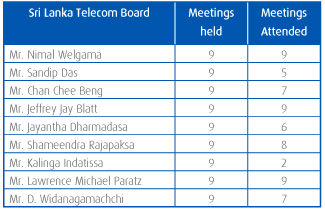
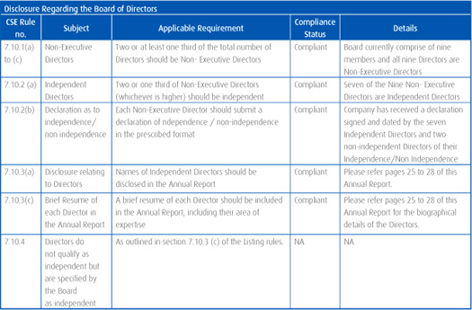
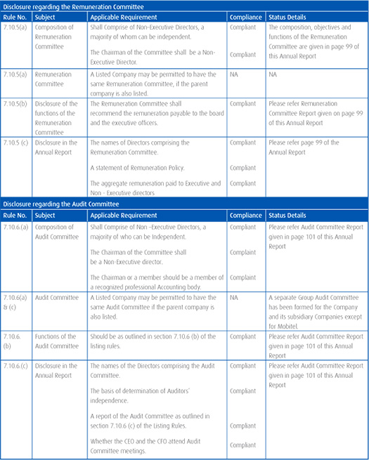

Corporate Governance
The Directors aspire to the highest standards of corporate governance that could be deemed appropriate for the Company in terms of its size, nature and stage of development. The Board of Directors is accountable to shareholders for the overall direction and control of the Company and its subsidiaries. It is committed to high standards of governance designed to protect the interests of shareholders and all other stakeholders while promoting the highest standards of integrity, transparency and accountability.
The Board's role is to provide leadership of the Group within a framework of prudent and effective controls which enables risks to be assessed and managed. The Board sets the Group's strategic aims, ensuring that the necessary financial and human resources are in place for the Group to meet its objectives and review management performance.
A key objective of the Group's governance framework is to ensure compliance with applicable legal and regulatory requirements in accordance with the Company's constitution, the Colombo Stock Exchange Rules on Corporate Governance, the Companies Act, and all other applicable laws.
The Board
At the date of this report the Board comprises nine Non-Executive Directors. Directors appointed in terms of the Articles of Association of the Company by the Board are subject to election by shareholders at the following annual general meeting, and thereafter, Directors (other than the Chairman) are subject to re-election at least once every three years in terms of the Articles of Association. The details of the Directors who served on the Board during the year and their retirement by rotation are given in the Directors report in page 92 of the Annual Report.
The Directors possess a broad range of skills, qualifications and experience. The Board meets regularly, usually on a monthly basis, and all information in connection with items being discussed at a meeting of the Board is provided to each Director prior to the meeting. With the approval of the Chairman, each Director has the right to seek independent legal and other professional advice at the Company's expense concerning any aspect of the Company's operations or undertakings in order to fulfill their duties and responsibilities as Directors.
In addition to formal Board meetings, during the year, the Directors held frequent informal discussions and reviews of the Company's affairs. These include matters pertaining to the Company's assets, budgets, investments, acquisitions, technology development, independent professional advice, accounting, audit, internal financial controls and risk assessment.
The Directors are responsible for the strategic direction of the Company, the setting of the corporate objectives, monitoring of the operational and financial performance of the Company's activities and the Company's system of internal control. In addition, the Board investigates ways of enhancing existing risk management strategies, including appropriate segregation of duties and the employment of suitable qualified and experienced personnel.
Independence of Directors
In accordance with the criteria for "Independence" specified by Section 7.10.4 of the listing rules of the Colombo Stock Exchange, the Board has received a declaration signed and dated by each non-executive director of their independence/non-independence. According to the declaration submitted by the Directors, out of nine directors, seven were considered independent non-executive directors. The remaining two directors namely Messrs Chan Chee Beng and. D. Widanagamachchi - are considered to be non independent. Mr. Chan Chee Beng is a Board Director of Global Telecommunication Holdings N.V which has a significant stake in SLT and Mr. D Widanagamachchi is also an employee of Ministry of Finance and Planning which holds 49.5% stake in SLT through the Secretary to the Treasury.
Roles and responsibilities of Chairman and Chief Executive Officer
The offices of Chairman and Chief Executive are held by different individuals. The Chairman is responsible for the conduct of the Board but takes no part in the day-to-day running of the business. The Chairman ensures that Board discussions are conducted in such a way that all views are taken into account and that no individual Director or small group of Directors dominates proceedings. The Board has delegated responsibility for the operation and administration of the Company and its controlled entities to its Chief Executive Officer. Responsibilities are delineated by authority delegations. The CEO's overall responsibility includes the direction and control of the Company and the achievement of agreed short-term and medium-term corporate objectives, strategic goals, business plans and benchmarks. The responsibilities of the CEO are set out in the Articles of Association of the Company and have been approved by the shareholders.
Board meetings
During the year 2011, nine (09) Board meetings were held and the attendance of the Directors at Board meetings were as follows:

Board Sub Committees
The Board is assisted in fulfilling its responsibilities by four principal committees, the Audit Committee, Remuneration Committee, Technology Sub-Committee, and Senior Tender Board. The Board and its committees are supplied with full and timely information to enable them to discharge their responsibilities. It is the responsibility of the Board of Directors to ensure good corporate governance. Good corporate governance requires that the Board must govern the Company with integrity. Details of the activities of the Audit Committee and Remuneration Committee are set out in the respective Sub-Committee.
i. Audit Committee
The Company has established an Audit Committee, which has a formal charter approved by the Board of Directors. The Audit Committee reviews the financial statements and considers and recommends accounting policies to be adopted by the Company to the Board of Directors. It also reviews the performance of the Company's internal audit function; and compliance by the Company with legal and regulatory requirements. The members of the Committee during the financial year are given in the Audit Committee Report given on page 101.
ii. Remuneration Committee
The Company has formed a separate Remuneration Committee, which functions as the remuneration committee of the subsidiary companies excluding Mobitel. The Remuneration Committee consists of three (03) Non-Executive Directors all being independent Directors.
Mr. Jayantha Dharmadasa - Chairman
Mr. Sandip Das
Mr. Nimal Welgama
The Remuneration Committee usually meets once a year. Its role is to make recommendations to the Board on the following
- Remuneration policy and specific packages for executives and non-executive staff
- Employee benefits and long term incentive schemes
The Group's remuneration policy is based on the principles supporting the recruitment, motivation and retention of high quality employees; ensure that performance is the key factor in determining individual reward and to communicate the reward structure clearly and effectively to executives and non-executives.
The CEO's remuneration shall be decided by the Board of Directors and the remunerations to the other members of the management shall be decided by the CEO, following consultation with the Remuneration Committee of the Board of Directors. The remuneration levels for the management shall be revised yearly. A fixed basic remuneration shall apply to management members, based on position/area of responsibility, qualification and individual performance. As a general rule, variable remuneration shall be paid out to all the employees based on their performance.
iii. Technology Sub Committee (TSC)
The Technology Sub Committee (TSC) has been established for the purpose of studying the technology and providing a platform for engaging in intense technical discussions and looking at roadmaps with a long term perspective making recommendations to the Board for consideration and implementation. The TSC focuses on how best to increase organizational efficiencies; support professional staff capabilities; and develop a flexible delivery system to effectively respond to new technological advances and information. By focusing on establishing a resilient and vibrant technology backbone, the Company will be able to encompass new technologies that serve its strategic goals.
- Technologies Sub Committee comprises of three (03) non-executive Directors namely;
Mr. Lawrence Paratz – Chairman
Mr.Shameendra Rajapaksa
Mr. Jeffrey Jay Blatt
The Board considered their expertise in the field of technologies in appointing them to the TSC. The details of their expertise in the field of technologies are given in their profiles.
The Chief Executive Officer of the Company and a team of technical heads of the Company and its subsidiary Companies are brought together for sharing the group synergies/opportunities and collective learning.
- The TSC is chaired by Mr. Lawrence Paratz, who has more than 30 years experience in all facets of the telecommunication industries including mobile, fixed, broadband, satellite and international networks both domestically and internationally.
- As a subcommittee of the Board, the TSC is obliged to operate under open meeting laws and common procedures as specified in their terms of reference.
- The Board will have final authority on the TSC recommendations for implementation.
The Responsibilities of the Committee are to review relevant matters with members of the group in four key areas;
- Review existence and appropriateness of plans
- Review existence and appropriateness of processes
- Review planned and achieved Network Performance, and Methods of Assessment.
- Review the Company's Technology, People and Skill Plans and their implementation
iv. Senior Tender Board
The Senior Tender Board (STB), which comprises of seven members including four non-executive directors all being independent directors, the Chief Executive Officer, the Chief Financial Officer and the Chief Corporate Officer is appointed by the Board to review the Group procurement needs. The procurement function involves a standard procurement process approved by the Board.
Mr. Shameendra Rajapaksa (Chairman), Mr. Lawrence Paratz, Mr. Jeffrey Jay Blatt and Mr. Kalinga Indatissa were appointed to serve on the STB by the Board in terms of its Terms of Reference approved by the Board.
In order to consolidate common procurement requirements across SLT and its subsidiaries, all procurement needs of the Group should be achieved through a standard and documented process, managed and co-ordinated through Group Procurement. This initiative will save time and money while reducing risk and delivering a smoother professional result.
Company Secretary
The role of the Company Secretary is dealing with directors at board meetings and with shareholders. The Company Secretary attends Board meetings and ensure that minutes are kept of all proceedings at the Board meetings. The Company Secretary also advises the Board and ensures the proper procedures are followed by the Board in relation to the Companies Act, rules of the Colombo Stock Exchange, the Articles of Association of the Company and other applicable rules and regulations. The Board through the Company Secretary ensures that all capital market regulatory requirements are complied with and disclosures made in a timely, understandable, full and fair manner.
Related Party Transaction
Related party transactions are disclosed on pages 148 to 154 of this Annual Report.
Internal Control
The Board of Directors has designed and implemented a system of Internal Controls required to carry out the operations of the Company in an orderly manner, safeguard its assets, and secure, as far as possible, the accuracy and reliability of financial records. The Board assures that the Audit Committee monitors the control process through the results of audits executed by the Internal and External Audit functions. The Audit Committee ensured that the systems of internal control over financial reporting were also reviewed during the year to ensure that the financial reporting process is sound. The Directors have assigned the internal audit function to the Chief of Internal Audit, who reviews and reports on the effectiveness of financial, operational and compliance controls.
Risk Management
Risk management is an important part of internal control. In order to ensure a sound system of internal control and to mitigate risk, processes have been put in place.
The Board has ensured sound risk management capabilities through the Company Transformation Programme (CTP) and Enterprise Risk Management (ERM). An enterprise risk management initiative has been implemented from 2011. The management exercises control over the Company's financial and capital budgets, securing Board approval for budgets and the comparison of actual against targets. The details of the risk management process and framework, and the highlights of potential risks which have an impact on the Company's business, revenue, profits, assets, liquidity, and capital resources adversely can be found in the risk management section of this report.
Corporate Governance Reporting
The following disclosures are made in conformity with Section 7 of the Rules of the Colombo Stock Exchange:


Risk Management
Successful implementation of Business plan and Strategy comes with effective treatment of risks and opportunities.
At the business planning stage, SLT identifies the potential opportunities in the market; subsequently action plans are developed to achieve these objectives.
Identification of risks which may hamper the achievement of objectives, is also one of the essential components of SLT Annual Business Planning process.
As an incumbent telecommunication company, SLT faces the challenge of sustaining in the market under the swiftly changing technological and regulatory environment. When benchmarked with the telecommunication industries in the region, Sri Lanka is among the countries which have high industry risks. This is mainly driven by the economic situation, high competition in the industry and low penetration and technology adoption in the country. Telecommunication services are positioned at low profit margins, while the underlying investments are significantly high.
Establishing an ERM framework
During the year 2011, SLT has taken initiatives in establishing a formal risk management culture across the organization. A special organizational transformation project named 'Enterprise Risk Management' was carried out with the vision of making SLT a risk intelligent organization. The initial phase of this project delivered a risk management framework to SLT and relevant awareness and communication materials. Several awareness sessions were carried out to improve the risk management awareness among executives. A significant improvement in applying formal risk management process with project management practices could be witnessed during the year.
The subsequent phases of ERM targets to further establish the risk management culture in the organization. This will formalize the risk reporting and will further improve the awareness among all the staff in the organization. This exercise will lead to the development of Key Risk Indicators for the company.
Risks from the Operating Environment
Telecommunication industry bears a significant contribution towards national economic development. The year 2011 recorded a significant growth in economy in which tourism, hotel and banking sectors have shown significant performances. Telecommunication industry was a key driver behind the development of above services. The emergance of increasing and novel telecommunication needs has fueled the development of the industry. This has resulted in initiation of new telecommunication development projects all over the island by most of the operators.
SLT initiated one of its mega projects, i-Sri Lanka during the year. This brings a novel technological concept to Sri Lanka. Apart from the opportunities created by i-Sri Lanka, there are significant risk factors associated with the huge investment to be done in this project.
The year 2011, has shown further decline in the CDMA market, which eventually resulted in losses for 'CDMA only' operators. The growing demand in Broadband services has been the driver in SLT's fixed wired telephones. This demand has provided opportunity for SLT to sustain in the market under this difficult situation.
The 'Next Generation Network's are opening the opportunity to deliver diverse traffic over a single network. SLT's network upgrades towards an islandwide NGN, has created the opportunity for SLT to become the National Backbone for Telecommunication services. This saves unnecessary investments on duplicated resources, while it helps to provide optimum service to customers.
Regulatory Risks
Licence
SLT license which was effective for 20 years expired on 08th August, 2011. As a response to the renewal request made by SLT to TRC, the prevailed license was extended for another 06 months from August, 2011 until the license conditions related to the National Backbone Network (NBN) are finalized. In accordance with the Cabinet Decision where TRC was appointed to negotiate with SLT for establishment of NBN, TRC decided to incorporate the license conditions related to NBN also into the new license of SLT. Hence, negotiations to finalize the same terms and conditions are still in progress.
National Backbone Network (NBN)
Discussions and negotiations related to National Backbone Network (NBN) are being carried out between SLT and TRC. The obligations pertaining to NBN operation will be imposed to SLT via the license conditions to establish the NBN within a regulated framework. With the implementation of NBN, the NBN services will replace the existing backbone services of SLT Wholesale, which have to be provided under the regulated terms.
Regulation of Tariffs
The prevailing price war especially in the international voice market and in the broadband market is leading towards a very difficult situation for SLT. The implications are such that sustainability of the revenues has become an issue which has ultimately resulted in eroding of margins of the same services.
As a measure of addressing the price war in the domestic voice market TRC imposed floor rates and the need of floor rates even for data services has become a timely requirement.
Although substantial price reductions were introduced during 2011, specifically for the international backhauling service, the increase in demand was not up to the expectation as foreseen by TRC. Hence, any further pressures from industry to bring down the prices may create adverse impacts on SLT, which will lead to further revenue drops due to tariff reductions.
Legal Risks
Litigation
It must be noted that it is impractical to forecast the outcome of any particular case or the amount of any possible verdict in respect of ongoing litigation. Nevertheless, the defences taken in those cases have the judicious features of both the law and the facts. However it is unlikely that the final outcome of any particular litigation may materially affect the operations or cash flows of the Company.
SLT is a party to several court and out-of-court proceedings with other parties and detailed below is the summary of the meterial litigation these proceeded during 2011.
- Global Electroteks Limited has initiated legal action under High Court Case No. 20/2006 claiming damages of USD 12 Million from SLT PLC for alleged unlawful disconnection of interconnection services.
- Just in Time Holding (Pvt) Ltd filed a case against SLT in ICLP Arbitration Centre. JIT is claming USD 4,738,846.57, as payments due to them from SLT under the contract. SLT has lodged a counterclaim of Rs. 437,970,137.00 Under its Statements of Defense.
- Legal action filed by SLT against Colombo Municipal Council, against the arbitrary increase of assessment value for Head Quarter premises from 84 million to Rs. 96 million. The quarterly assessment tax in 2006 was increased from Rs. 7,350,000/- to Rs. 8,452,5000/-.
- Legal action was initiated by H/S Communication Ltd. against SLT & SLT Vision Com Ltd. seeking stay order against airing of certain channels by SLT VisionCom (Pvt) Ltd. And to recover arrears of US $ 486,000/- SLT made representations and no stay order was granted, and HS Communication Ltd withdrew their application for the stay order. But the main claim against SLT and SLT VisionCom Ltd is proceeding.
HR Related Risks
In the context of changing telecom business models; the human capital is exceedingly important. Employee skill development and employee retention are the most challenging functions in the present industry scenario. SLT has been successful in molding existing employees according to future requirements, while maintaining one of the lowest employee turnover ratios in the industry.
SLT faces the challenge of managing a diverse employee base which totals over 6,000. There are over 35 active employee unions. Maintaining healthy union interaction with management and keeping industrial harmony is imperative for the well being of the company. SLT was able to solve industrial conflicts which occurred during the year, providing long term solutions in agreement with all the employee unions, management and shareholders.
Financial Risk
SLT continues to adopt a holistic approach in managing financial risk. Accordingly, the company has developed following financial risk management measurements to mitigate these risks. Through training and management standards and procedures, SLT aims to develop a disciplined and constructive control environment in which all employees understand their roles and obligations.
Exchange Rate (FX) Risk
Foreign Exchange Risk is a major source of Market Risk and is unavoidable in any entity where re-pricing of Foreign Currency Assets and Liabilities are not identically matched. The company manages its Foreign Exchange exposure by maintaining foreign currency accounts for related inflows and using same for paying off some of its Liabilities in Foreign Currency. This serves as an effective hedging mechanism against Foreign Currency exposure. As a further measure, only optimum amounts are maintained in these Foreign Currency accounts and any excesses are converted to SLT's base currency (LKR) after carefully studying the future forecasts of the currency movements.
Interest Rate Risk
Interest rate Risk mainly arises as a result of SLT having interest sensitive assets and liabilities, which are directly impacted by changes in the Interest Rates. The Company's debt and investments are maintained in a mix of fixed and variable interest rate instruments and periodical maturity gap analysis is carried out to take timely action and to mitigate possible adverse impact due to volatility of the interest rates.
Liquidity Risk
Liquidity Risk is risk that an entity may not be able to meet its payment commitments due to unforeseen factors or be forced to borrow funds on unfavourable terms. In order to manage this risk, SLT employs regular financial planning and monitoring systems to ensure that sufficient cash flows are available to meet all financial commitments on time.
Credit Risk
The possibility of losses arising from the diminution in the credit quality of debtors can be considered the Credit risk. This Risk may not be limited to Balance Sheet items, but can also arise as a result of Off-Balance Sheet items such as Financial Guarantees. Comprehensive systems and procedures are in place to monitor and evaluate debtors and recoveries of the company. Further, Pre-paid sales are used as a means of mitigating Credit risk.